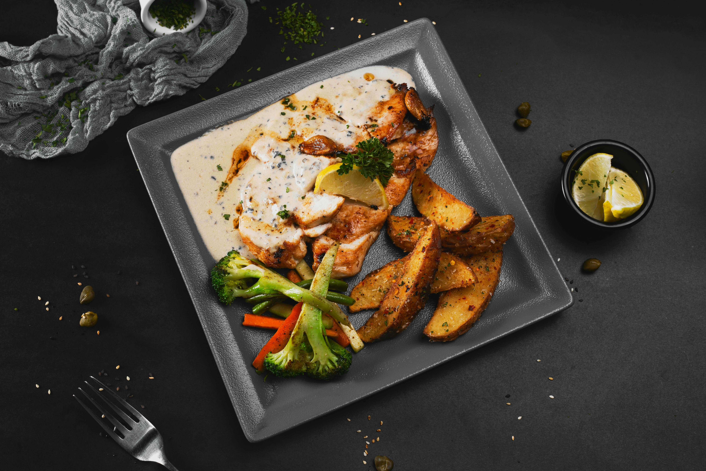

Chicken Piccata

Description
Chicken Piccata is a bright, flavorful Italian-inspired dish featuring tender chicken cutlets in a tangy lemon butter sauce with capers. It’s quick to prepare, making it a great option for weeknight dinners while still feeling elegant enough for guests.
Ingredients
- 2 boneless, skinless chicken breasts (sliced in half lengthwise)
- Salt and black pepper, to taste
- 1/2 cup all-purpose flour (for dredging)
- 2 tablespoons olive oil
- 2 tablespoons butter
- 1/2 cup chicken broth
- 1/4 cup fresh lemon juice
- 2 tablespoons capers, drained
- 2 tablespoons butter
- 2 tablespoons chopped fresh parsley (optional)
Steps
- Prepare the Chicken: Season the chicken with salt and pepper. Lightly dredge each piece in flour, shaking off excess.
- Cook the Chicken: Heat olive oil and butter in a large pan over medium heat. Cook the chicken for about 3–4 minutes per side until golden and cooked through. Remove from the pan and set aside.
- Make the Sauce: In the same pan, add chicken broth and lemon juice. Bring to a simmer, scraping up any browned bits from the bottom of the pan.
- Add Capers and Finish Sauce: Stir in the capers and let the sauce reduce slightly (about 3–5 minutes). Add butter and stir until melted and the sauce is slightly thickened.
- Combine and Serve: Return the chicken to the pan and spoon the sauce over the top. Cook for another 1–2 minutes to heat through.
- Garnish and Serve: Sprinkle with fresh parsley if desired and serve immediately. Pairs well with pasta, rice, or vegetables.
Home